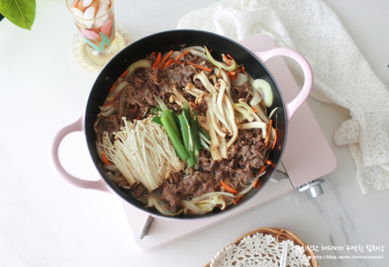

February 7, 2021
This week we were introduced to our project 1 where we are basically making and decorating our portfolio website. While I thought this project was a great idea for many students (art students, software engineers, etc.), I wasn’t sure what I would be doing since people in my field don’t really have portfolios. But from our weekly are.na homework, I noticed that I really liked simple, muted, yet interactive websites so I decided to google some interactive and unique portfolio websites to start gathering inspirations. While I’m still not sure what I’ll be using my project 1 for nor I know how to code any of the cool interactive/animated features I love seeing on others’ websites, I’m more excited to see what I’ll create in the next couple of weeks.
As for cooking, I made bulgogi soup. I felt pretty tired trying new greens so I decided to give myself a break from trying new things, but I still chose a dish with mushrooms, carrots, onions, etc. so I still get some nutrients. This dish is something I tried to recreate from numerous recipes since last year but I still for some reason don’t seem to get the right taste. This time it was a bit better though. I read from a source that bulgogi meat has to be cut very thinly and it’s difficult to find “paper-thin” pre-cut beef in stores. Of course, I can probably freeze the meat a little and try to cut it by myself but that felt like a lot of work so I never tried that. But my laziness thought of a brilliant idea this week. I thought about buying those philly cheesesteak meat since they’re veryyyyy thin and are sold in stores. Apparently those meat are still hard to find in stores as I had to go to 3 different stores to find them and they were a bit too thin for bulgogi, but I have to admit that they did taste better than my previous attempts. I might stick with these philly cheesesteak meat for bulgogi until I become less lazy.
I also ended up using these cheesesteak meat for shabu-shabu which is basically the Japanese version of Chinese hotpot. I boiled some bok choy, enoki mushrooms, king oyster mushrooms, tofu, and other veggie scraps in my fridge with a seafood-based broth with the steak which was a nice way to force myself to eat veggies.